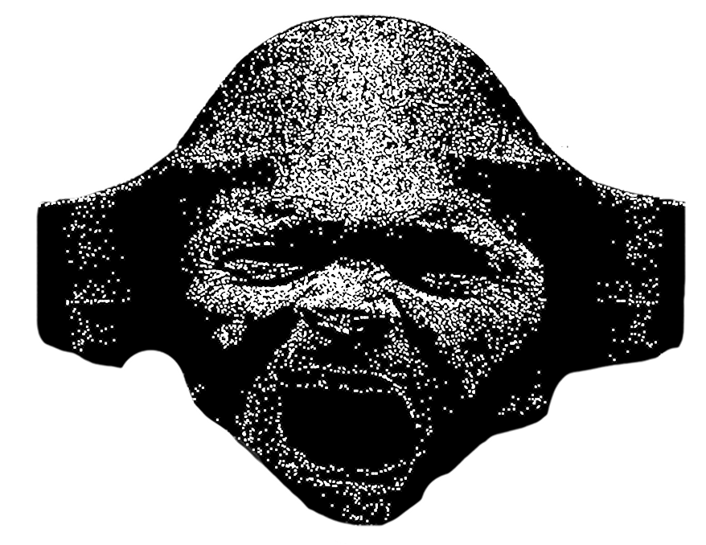

During archaeological
excavations in Tunnel
3-80-7, discovered deep
within the former office
complex of the General
Agency for Inertnobesafety
Assimilation, an unusual
face cast was found, made
from an unidentified
material. The remains were
found about 3 meters off
the ground in one of the
darkened corridors,
suggesting the object
was placed in the wall
for long-term observation.
The cast, judging
by its expression,
was left at a mo-
ment of extreme
psychological
influence -
perhaps this man
was caught in the
radio waves
emitted by the
worm Luminaria,
or he found him-
self in the zone
of some psychoac-
tive influence
that left him
no chance
of resistance
Looking at this face,
one can assume that it
expresses not just the
emotions of one person,
but is a symbol of the
suffering that all of
Luminaria's
"subordinates" endured
Scan of a pet-
rified face found
in tunnel 3-80-7